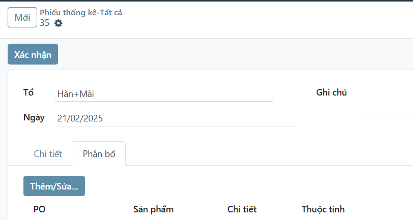

Phiếu thống kê (Người quản lý)
Menu: Sản xuất -> Nhập liệu -> Phiếu thống kê\Tất cả
Điều chỉnh số dư ban đầu
Tương tự như tạo phiếu mới với số lượng là số đã làm đc (luỹ kế) của từng chi tiết/công đoạn.
Tham khảo thao tác Tạo phiếu mới
Phân bổ lại số lượng
Quy tắc phân bổ tự động:
- Đơn nào xác nhận trước phân bổ trước
- Chỉ phân bổ vào những đơn có trạng thái
Xác nhận(ẩn những đơnNháphoặcHoàn thành)
Trường hợp muốn sửa lại:
- Mở phiếu muốn điều chỉnh
- Chọn tab
Phân bổ -
Nhấn nút
Thêm/SửaHiện ra hộp thoại
3.1 Chọn sản phẩm
3.2 Điền/sửa lại số lượng làm đc theo PO

3.3 Nhấn nút
Xác nhậnhộp thoại